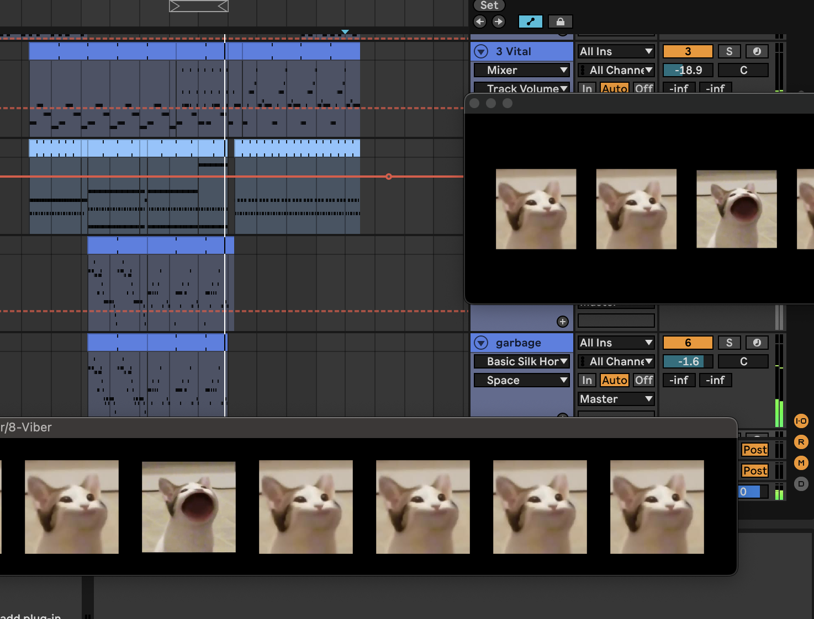
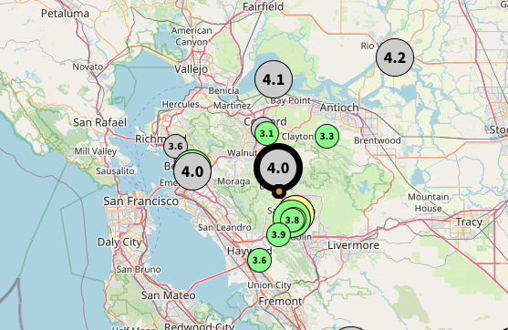
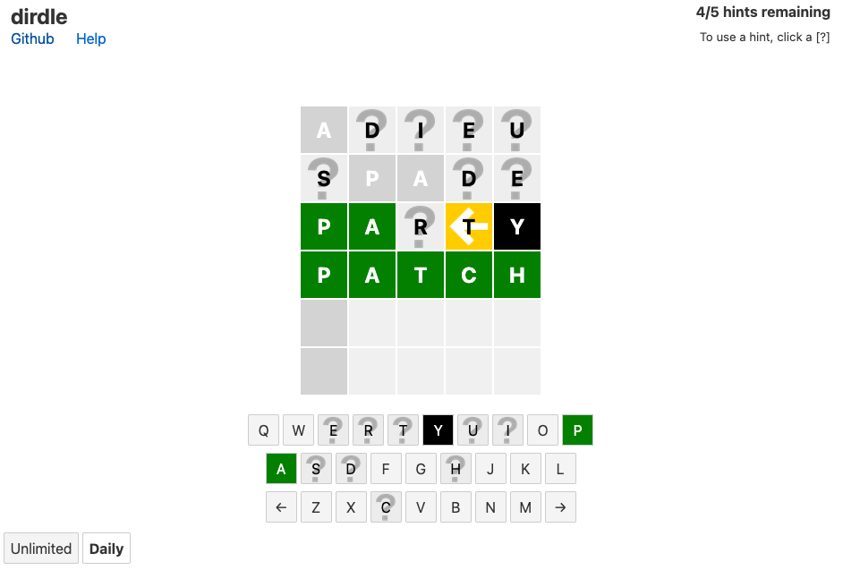
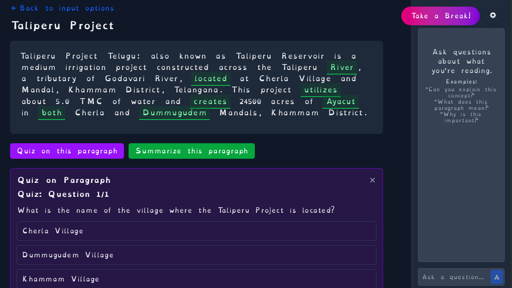
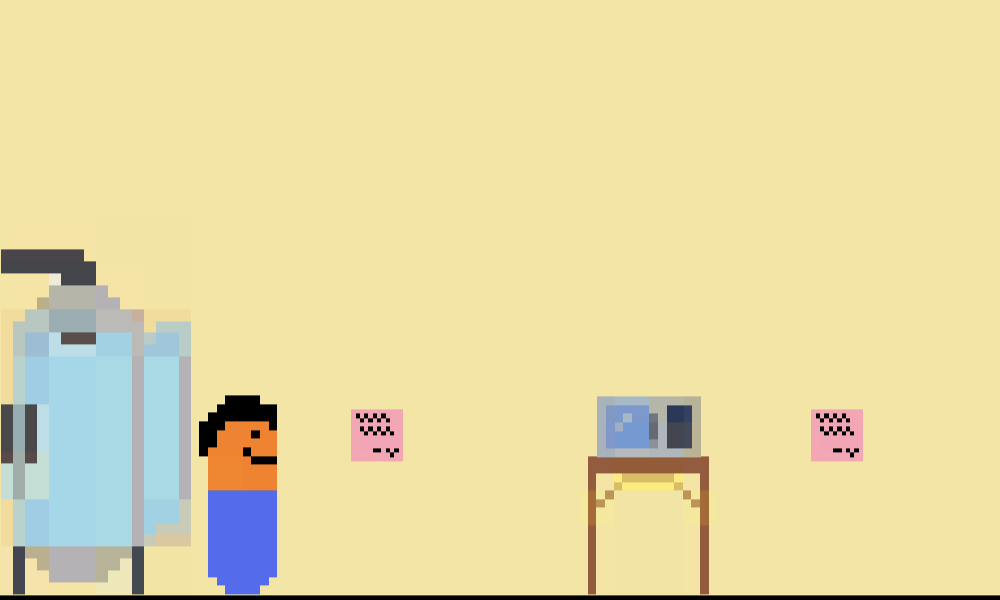
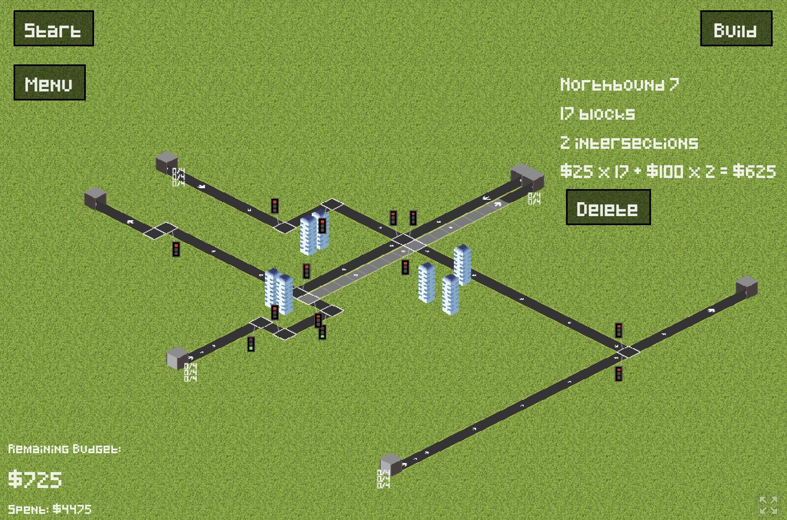
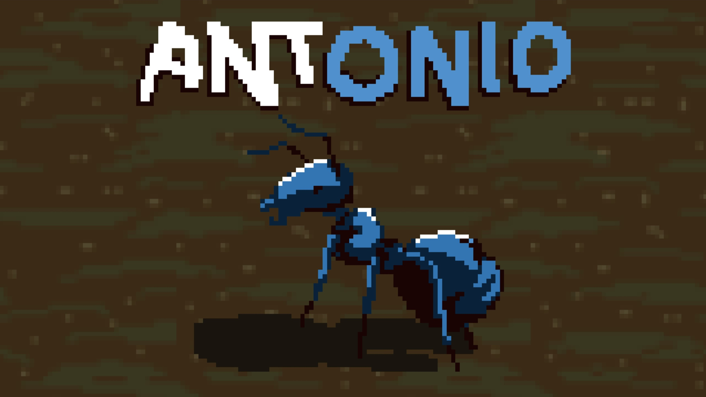

👋
Thanks for checking out my website! I love designing and building things, especially projects that make an impact and solve interesting problems.
Some things I'm interested in right now are natural language processing, mapping, and creative coding, though I'm always picking up new interests.
In the past, I've interned at Esri, where I've built cartography and design tools in ArcGIS Maps for Adobe Creative Cloud,
and at the California Geological Survey, where I worked on earthquake data tools within the Center for Engineering Strong Motion Data (CESMD).
During Summer 2026, I'll be interning at Amazon under the Computer Vision for Alexa team.
In my free time I enjoy jogging, biking, and hiking as far as I can.
Projects

ViberVST
A VST plugin for fun audio visualizations in your DAW.
JUCE
C++
p5.js

Strong Motion Data Viewer
An alternative map interface to view and download earthquake records from CESMD.
Next.js
Typescript
Tailwind
Leaflet.js

dirdle
Like Wordle, but with arrows and uncertain green tiles.
Svelte
Javascript
Game Jams & Hackathons

Active Reader
Best Overall at UCLA Hack on the Hill XII
Interactive app enhancing reading comprehension through fill-in-the-blank exercises and AI-graded assignments.
Next.js
Typescript
Tailwind
Langchain

The Reprint
Best Community Vote at UCLA Fiat Ludum game jam (Theme: Begin Anew)
A short puzzle game built in 72 hours about escaping a lab.
Unity
C#

Turnpike
Submission for Ludum Dare 59 (Theme: Signal)
A game built in 72 hours about building roads and controlling intersections.
Phaser
Typescript

Antonio
Submission for Ludum Dare 56 (Theme: Tiny Creatures)
A game built in 72 hours about a small ant in a world full of spiders.
Unity
C#